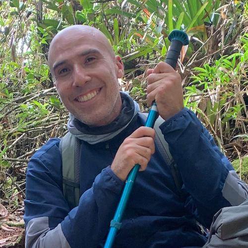

Grupo de Estudios Botánicos GEOBOTA
Inicio
Acerca
Herbario
Integrantes
Noticias
Proyectos
Publicaciones
Integrantes
Investigadores
Fernando Alveiro Alzate-Guarin
Coordinador del grupo
Felipe Alfonso Cardona-Naranjo
Jefe sección Herbario
Isabel Carmona-Gallego
Investigador
Heriberto Antonio David-Higuita
Curador colección HUA
Ramiro Fonnegra-Gómez
Fundador del grupo
Juan Mauricio Posada-Herrera
Investigador
Francisco Javier Roldán-Palacio
Investigador
No hay resultados
Estudiantes de posgrado
Angy Vanesa Caro-Sánchez
Estudiante de maestría
Álex Espinosa-Correa
Estudiante de doctorado
Mayra Alejandra Herrera-Pacheco
Estudiante de maestría
Yeison Londoño-Echeverri
Estudiante de maestría
Laura Stefany Marín-Fernández
Estudiante de maestría
Jhon Steven Murillo-Serna
Estudiante de maestría
Jhon Freddys Pérez-Mosquera
Estudiante de maestría
Jose Miguel Rojas-Villa
Estudiante de maestría
Herber Jassin Sarrazola-Yepes
Estudiante de doctorado
Ana María Trujillo-López
Estudiante de maestría

Bladimir Vera-Marín
Estudiante de doctorado
No hay resultados
Estudiantes de pregrado
No hay resultados
Alumni
Astrid Janeth Álvarez-Sánchez
Estudiante de pregrado
Susana María Arango-Carvajal
Estudiante de pregrado
Dora Emilse Cano-Gallego
Estudiante de pregrado
Yudy Alejandra Gallego-Franco
Estudiante de pregrado
Diana Cristina García-Ruenes
Estudiante de pregrado
Sebastián Giraldo-Gómez
Estudiante de pregrado
Edwin Arley Gutiérrez-Torres
Estudiante de pregrado
Manuela Lesmes-Diaz
Estudiante de pregrado
Alejandra León-Ciro
Estudiante de pregrado
Lina Marcela Muñoz-Correa
Estudiante de pregrado
Julián Patiño-Flórez
Estudiante de pregrado
David Pérez-Uribe
Estudiante de pregrado
Mario Alberto Quijano-Abril
Investigador
Manuela Salazar-Sánchez
Estudiante de pregrado
Santiago Valencia-Zuluaga
Estudiante de pregrado
No hay resultados
Volver arriba